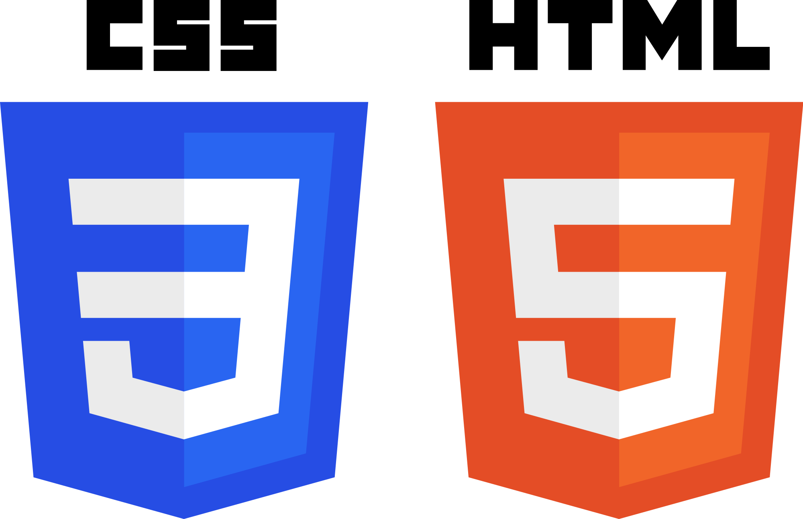
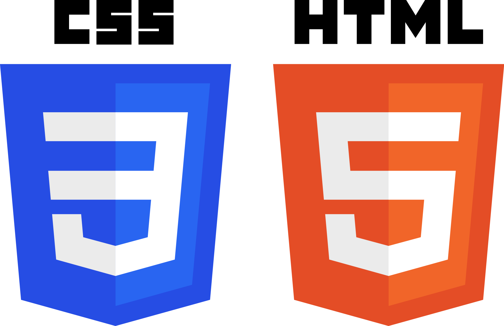

Biography
My full name is Martina Spirovska. I was born in a small town in Macedonia by the coast of the Ohrid Lake, named Struga. I come from a family of four, including my father Vlado, my mother Biljana and my younger brother Ivan. Even though I was born in Struga, technically I can't say I am from Struga because both my parents come from different parts of Macedonia. My father is from Bitola, and my mother comes from Gostivar, so growing up I used to travel evey weekend to visit my grandparents, which allowed me to make a lot of different friends and strengthen my friends-making and social skills. As I said, I have a younger brother, Ivan, who is probably the most loved and favourite person in my life. I say with pride that I am a really good big sister, who is always looking out for her little brother. I have a few friends who have been in my life since childhood, which in my opinion makes me a loyal and trustworthy person.
Education
I started of my education in the local elementary school "Braca Miladinovci". I was a straight A student from the start of my education, and continued my success in the local high school "D-r Ibrahim Temo". I specifically thrived in mathematics, chemistry and biology. After finishing high school, I was in a bit of a dilemma as to where to continue my education. On one side, I wanted to follow my parents footsteps and study medicine to become a doctor, but on the other side I was really interested in Informatics and the fact-paced improvement in technology. So I made my decision. I decided to apply to FINKI and improve my programming skills. I applied and after what seemed a decade of waiting, I received my acceptance letter. I was thrilled. At the beginning, studying at FINKI was hard. I didn't have any programming skills, but I didn't give up and kept studying. I am very proud of myself for passing all my first year exams and I am going in strong for softmore year.


 

Hobbies
In my free time, I like to watch a lot of movies. My favourite genre is psychological thriller/horror movies. My favourite movie is Black Swan starring Natalie Portman. I also enjoy listening to music. I like listening to Yugoslavian rock music from the 80s, from the bands Riblja Corba and Bjelo Dugme. I also liten to Lana Del Rey and the Weeknd. I am a self-taught guitar player and I can play the acoustic, as well as the electric guitar.
Travels
I like travelling and I look forward to travelling more in the future. I have visited the countries: Turkey, Greece, Albania, Bugaria, Serbia and Ungaria. My favourite trip is the most recent trip I took with my family. We went to Belgrade. I loved it. We visited Kalemegdan, Knjez Mihajlova and took long walks along Dunav. In the future my dream destinations are London and Paris.